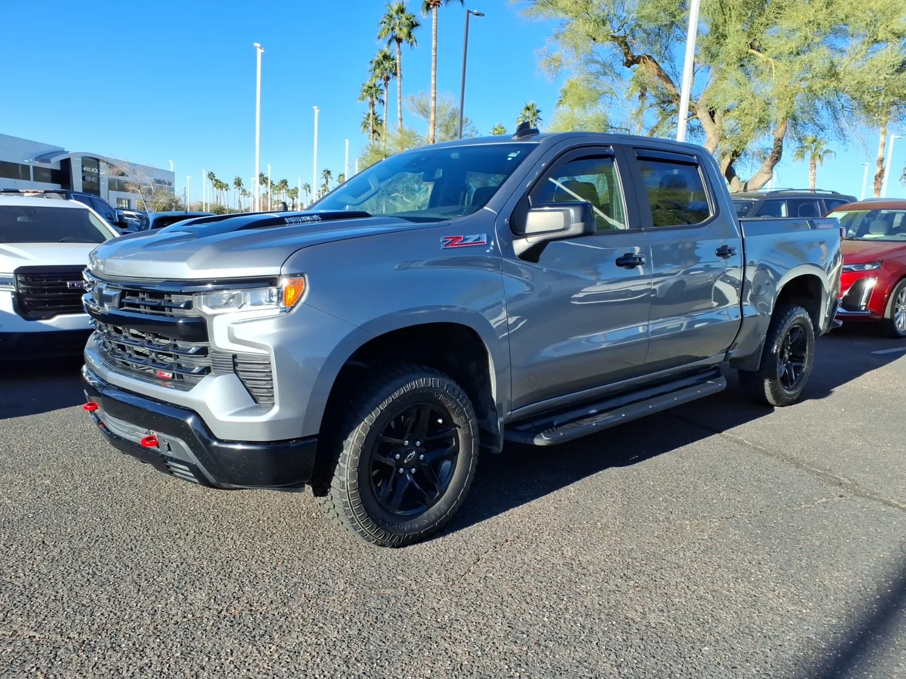
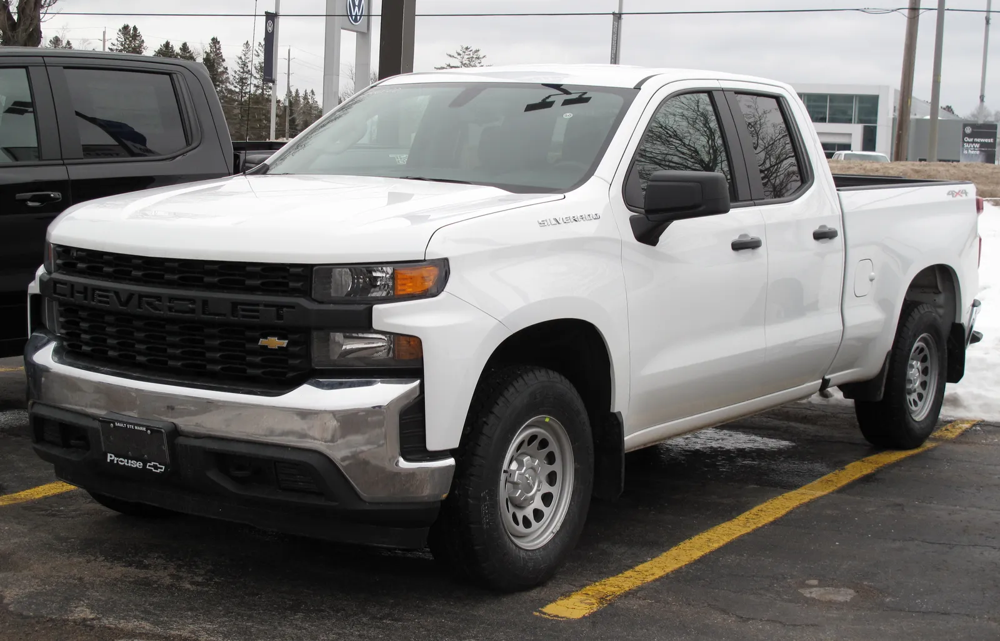
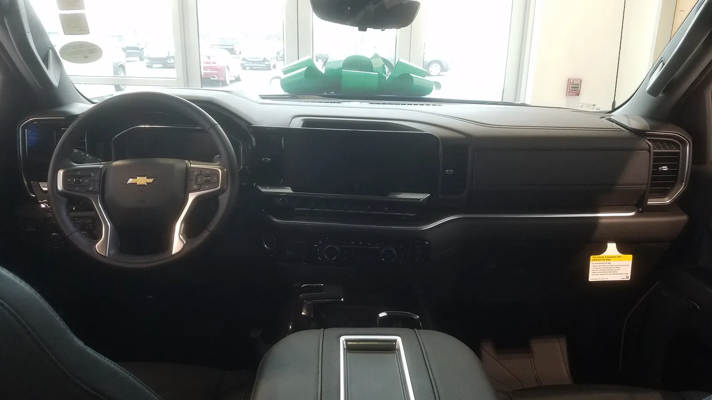
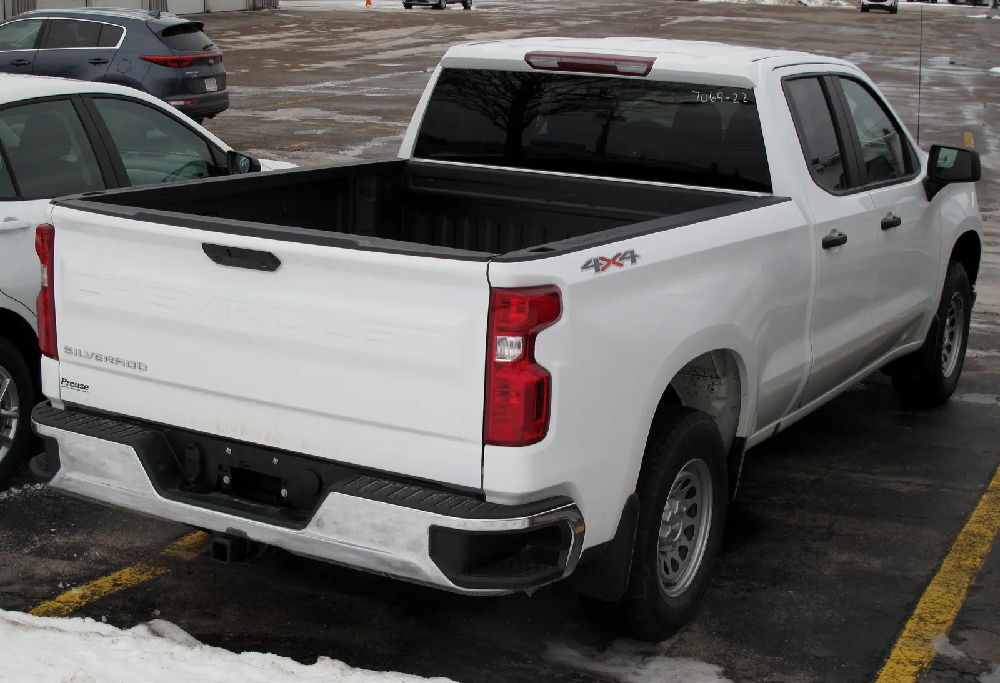

▲ 2027년형 실버라도 1500에 탑재되는 신형 V8 엔진은 오일 딥스틱을 없애고 디지털 표시 방식을 채택했다 ⓒ Wikimedia Commons
내 차 보닛을 열고 노란 손잡이를 뽑아 오일 색을 확인하던 그 익숙한 동작이, 이 트럭에서는 더 이상 통하지 않는다.
GM이 2027년형 쉐보레 실버라도 1500과 GMC 시에라 1500에 들어갈 신형 V8 엔진에서 전통적인 오일 딥스틱을 뺐다고 여러 외신이 보도했다. 대신 오일량은 계기판이나 인포테인먼트 터치스크린에서 디지털로 확인하는 방식으로 바뀐다.
1. 무엇이 바뀌었나 — 신형 V8과 딥스틱 삭제
이번 변경의 핵심은 GM의 6세대 소형블록(Small Block) V8 엔진에 있다. 2027년형 실버라도 1500·시에라 1500에는 5.7L V8(L76)과 6.6L V8(L78) 두 가지 신형 V8이 탑재되며, 알루미늄 블록과 이중 연료 분사 시스템을 특징으로 한다.
기존 세대 V8까지는 보닛을 열고 딥스틱을 뽑아 오일량과 상태를 육안으로 확인하는 것이 표준이었다. 하지만 신형 V8부터는 공장 출고 단계에서부터 딥스틱 자체가 빠진다. GM 대변인은 5.7L·6.6L V8이 딥스틱 없이 출고된다는 사실을 확인한 것으로 전해졌다.
📍 오일량은 이제 어떻게 확인하나
기존 온보드 컴퓨터에 연결된 오일 센서를 활용해, 계기판 디스플레이나 16.3인치 중앙 터치스크린에서 "Vehicle Info" 메뉴로 들어가면 오일 레벨을 확인할 수 있다. 시동을 걸고 컴퓨터가 측정값을 산출할 때까지 잠시 기다려야 하는 것으로 전해졌다.

▲ 실버라도 1500. 2027년형부터 V8 트림의 오일 확인 방식이 크게 바뀐다 ⓒ Wikimedia Commons
2. 왜 딥스틱을 없앴나
보도에 따르면 배경에는 원가 절감이 있다. 실버라도급 풀사이즈 픽업은 연간 약 60만 대가 판매되는 볼륨 모델인데, 대당 딥스틱 관련 부품비를 약 50센트만 줄여도 연간 약 30만 달러의 비용 절감 효과가 발생한다는 계산이다.
| 요인 | 내용 |
|---|---|
| 원가 절감 | 대당 약 50센트 절감 × 연 60만 대 = 약 30만 달러 규모 |
| 기술적 여건 | 기존에도 탑재돼 있던 오일 센서·온보드 컴퓨터를 소프트웨어적으로 활용 |
| 업계 흐름 | 일부 완성차 업체가 이미 특정 엔진에서 딥스틱을 생략하는 추세 |
다만 이는 소비자 편의보다 제조 원가 최적화에 초점을 맞춘 변화라는 지적도 나온다. 실제로 정비 업계와 오너 커뮤니티에서는 "굳이 없앨 필요가 있었나"라는 반응이 적지 않은 것으로 전해진다.
3. 소비자·정비업계 반응
이번 소식이 전해지자 온라인 커뮤니티와 자동차 매체를 중심으로 엇갈린 반응이 나왔다. 특히 셀프 정비를 즐기는 오너들 사이에서는 우려의 목소리가 크다.
✅ 오너 입장에서 달라지는 점
· 주유소나 도로변에서 즉석으로 오일 상태를 육안 확인하기 어려워짐 — 시동을 걸고 화면을 봐야 함
· 배터리가 방전되거나 계기판 오류가 있을 경우 오일량 확인 자체가 곤란해질 가능성
· 오일 색·점도 등 딥스틱으로만 파악 가능했던 정성적 정보는 디지털 게이지로 대체되지 않음
· 정비소에서도 진단 장비나 인포테인먼트 메뉴 접근이 필요해 정비 편의성 변화 예상
반면 GM 입장에서는 최신 트럭 오너들이 이미 계기판·터치스크린 기반 차량 정보 확인에 익숙하다는 점, 오일 센서 기반 디지털 측정이 사람이 딥스틱으로 육안 판단하는 것보다 더 정확할 수 있다는 점을 내세울 것으로 보인다.

▲ 실버라도 실내의 중앙 터치스크린. 신형 V8 트림에서는 이 화면으로 오일량을 확인하게 된다 ⓒ Wikimedia Commons
4. 예외 엔진 — 딥스틱이 남는 파워트레인
모든 실버라도 엔진에서 딥스틱이 사라지는 것은 아니다. 신형 V8(5.7L·6.6L)에 한정된 변화이며, 나머지 엔진은 기존 방식을 유지한다.
| 엔진 | 형식 | 오일 확인 방식 |
|---|---|---|
| 5.7L V8 (L76) | 가솔린 V8 | 디지털 게이지 (딥스틱 없음) |
| 6.6L V8 (L78) | 가솔린 V8 | 디지털 게이지 (딥스틱 없음) |
| 2.7L 터보 (L4B) | 가솔린 터보 4기통 | 기존 물리 딥스틱 유지 |
| 3.0L 듀라맥스 (LZ0) | 터보디젤 6기통 | 기존 물리 딥스틱 유지 |
즉 신형 V8을 선택하는 트림에서만 이 변화를 체감하게 된다. 터보 4기통이나 듀라맥스 디젤을 선택하면 기존과 동일하게 딥스틱으로 오일을 점검할 수 있다.
✅ 구매 시 체크포인트
· 셀프 정비를 선호한다면 2.7L 터보나 3.0L 듀라맥스 트림이 상대적으로 익숙한 방식 유지
· V8 특유의 사운드·출력을 원한다면 디지털 오일 게이지 방식에 적응 필요
· 딜러 시승 시 계기판·터치스크린의 오일량 확인 메뉴 위치를 미리 확인해보는 것도 방법
5. 관전 포인트 — 딥스틱 없는 시대로 가나
GM의 이번 결정이 업계 전반의 흐름으로 이어질지도 관심사다. 이미 일부 완성차 업체들이 특정 엔진에서 딥스틱을 생략해왔지만, 연간 60만 대가 팔리는 대표 볼륨 모델인 실버라도에 적용된다는 점에서 파급력이 다르다는 평가가 나온다.
✅ 앞으로 지켜볼 변수
· 실제 출시 후 오너들의 디지털 오일 게이지 신뢰도 평가
· 경쟁사(포드 F-150, 램 1500 등)의 유사 방식 도입 여부
· GM 다른 차종·엔진으로의 확대 적용 여부
· 정비업계의 대응(진단 장비 보급 등)
관련 보도 원문은 GM Authority에서 확인할 수 있다. GM Authority 원문 바로가기

▲ 2027년형 실버라도 1500. 연간 약 60만 대가 판매되는 GM의 핵심 볼륨 모델이다 ⓒ Wikimedia Commons
6. 요약
2027년형 쉐보레 실버라도 1500·GMC 시에라 1500에 탑재되는 GM 6세대 V8 엔진(5.7L·6.6L)이 전통적인 오일 딥스틱을 없애고 디지털 오일량 표시 방식을 채택한다. 오일량은 계기판이나 16.3인치 터치스크린에서 확인해야 한다.
변경 배경은 대당 약 50센트, 연간 약 30만 달러 규모의 원가 절감으로 알려졌다. 2.7L 터보와 3.0L 듀라맥스 디젤 엔진은 기존 딥스틱을 그대로 유지해, 이번 변화는 신형 V8 트림에 한정된다.
셀프 정비를 선호하는 오너들 사이에서는 우려 섞인 반응도 나오는 만큼, 실제 출시 이후 디지털 게이지의 신뢰도와 사용성 평가가 관전 포인트가 될 전망이다.